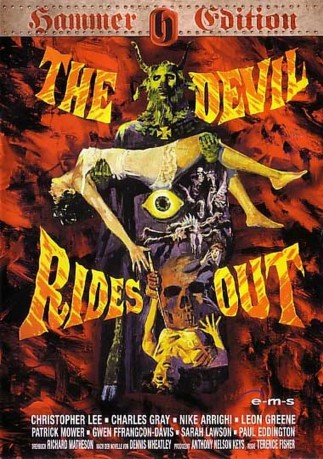

#12262 Die Braut des Teufels
Alternativ: The Devil Rides Out (Englischer Titel)
 
 IMDB-Wertung: 7.0 / 10
IMDB-Wertung: 7.0 / 10  Tomatometer: 94
Tomatometer: 94  Metascore: 0
Metascore: 0 
Im Frankreich des 17. Jahrhunderts treibt der Hohepriester Mocata als Führer einer Gruppe von Satanisten sein Unwesen und versetzt die Bevölkerung in Angst und Schrecken, weil er Bauerntöchter entführen lässt und sie auf dem Altar der Sekte dem Teufel opfert. Als der vornehme Duc de Richleau von den Untaten erfährt, macht er sich mit den Riten der Sekte vertraut und wendet sie gegen die Teufelsanbeter. Es gelingt ihm, die verehrte schöne Tanith als Mocatas Händen zu befreien und der Bande ein Ende zu bereiten.
Jahr: 1968
Dauer: 96 Minuten
FSK: 16
Land: England Studio: Anolis EntertainmentTonspuren:
Untertitel:
Auflösung: 1080p (1808x1080) Größe: 8949 MB
Genre: Horror
Regisseur: Terence Fisher
Drehbuch: Richard Matheson, Dennis Wheatley
Soundtrack: James Bernard
Darsteller:
 Christopher Lee als Duc de Richleau
Christopher Lee als Duc de Richleau Charles Gray als Mocata
Charles Gray als Mocata- Nike Arrighi als Tanith Carlisle
 Leon Greene als Rex Van Ryn
Leon Greene als Rex Van Ryn- Patrick Mower als Simon Aron
- Gwen Ffrangcon Davies als Countess
- Sarah Lawson als Marie Eaton
- Paul Eddington als Richard Eaton
- Rosalyn Landor als Peggy Eaton
 Patrick Allen als Rex Van Ryn (uncredited)
Patrick Allen als Rex Van Ryn (uncredited) Peter Brace als Satanist (uncredited)
Peter Brace als Satanist (uncredited)- Eddie Powell als The Goat of Mendes (uncredited)
- Keith Pyott als Max (uncredited)
- Jeff Silk als Chauffeur (uncredited)
- John Tatum als Satanist (uncredited)
- Russell Waters als Malin
- Yemi Goodman Ajibade als African (uncredited)
- Liane Aukin als Satanist (uncredited)
- John Bown als Receptionist (uncredited)
- John Brown als (uncredited)
- John Falconer als Satanist (uncredited)
- Anne Godley als Satanist (uncredited)
- Richard Huggett als (uncredited)
- Ahmed Khalil als Indian (uncredited)
- Willie Payne als Servant (uncredited)
- Richard Scott als Satanist (uncredited)
- Mohan Singh als Mocata's Servant (uncredited)
- Zoe Starr als Indian Girl (uncredited)
- Fred Stroud als Satanist (uncredited)
- Peter Swanwick als Satanist (uncredited)
- Bert Vivian als Satanist (uncredited)
Datei: X:\1968\Braut des Teufels, Die (1968, FSK16, 1808x1080).mkv seit 12.01.2020
Festplatte: Gemischt-01+Anime
 Es gibt insgesamt 25 Filme in der Gruppe '1968'
Es gibt insgesamt 25 Filme in der Gruppe '1968'